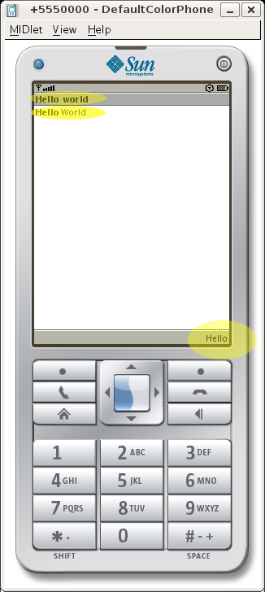
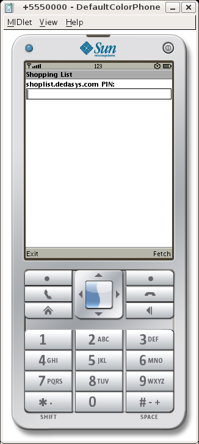

These days, almost everyone has a cell phone, and cell phones keep getting faster, smarter, and more capable, yet relatively few applications exist for them. The Hecl programming language makes it easy to script applications for your cell phone - with just a few lines of code, you can create applications that you can carry with you, everywhere.
I first fell in love with computers when my parents bought me a Commodore 64, a fairly nice computer for the time. Thanks to Moore's law, and the relentless pace of development, the average cell phone is now more powerful than that machine from just 20 some years ago. While it's understandable that many people just want to make phone calls, think of all the programs out there waiting to be written that take advantage of the fact that you almost always have a cell phone with you. I think we're just beginning to scratch the surface of what's possible, especially as phones continue to get faster, and have better connections to the Internet.
I became interested in writing cell phone applications several years ago, after a rainy day high in the Italian Dolomites near Cortina d'Ampezzo - my old phone ended up in a mud puddle and died, leading me to purchase a new phone with J2ME (Java) capabilities. Writing applications in Java was OK, but I thought to myself that it would be an interesting experiment to try and create a scripting language that runs on top of the J2ME (now known as Java Micro Edition or Java ME) environment.
When I created Hecl, I did so with several goals in mind:
Hecl has other benefits too - it's faster to develop applications, because you don't have to recompile after each change. In the hands of a clever programmer, it's also possible to do interesting things with Hecl because of its interpreted nature. You could start an application on your phone, and download additional bits of code off the web.
The aim of this tutorial is to help you create cell phone applications, so let's get started right away. We'll need a few things first:
apt-get install sun-java5-jdk, if
you've added the "multiverse" repositories to your /etc/apt/sources.list file:
deb http://us.archive.ubuntu.com/ubuntu/ feisty multiverse
Sun's WTK requires installation - you can put it somewhere like /opt, so it won't
mixed up with the rest of your system. The installation process is very simple - just say yes
to a few questions, and you're done. Hecl doesn't require installation - everything you need
is already there in the distribution.
To see if everything's working, you can try launching the emulator with the sample application:
/opt/WTK2.5.1/bin/emulator -classpath build/j2me/final/cldc1.1-midp2.0/Hecl.jar Hecl
That should bring up something like this:

This is Hecl's built in Demo - it's source code is located in midp20/script.hcl,
but before I get too far ahead of myself, let's go back and create the classic Hello World
application, just to get started and see how to work with Hecl.
Note: Hecl actually comes in several flavors, with slightly different GUI commands - MIDP1.0 (older phones), which has fewer commands and doesn't do as much, and MIDP2.0, for newer phones, which has a lot more features. This tutorial utilizes the MIDP2.0 commands, because that's what current phones are based on. The concepts described are very similar for the MIDP1.0 commands, but the commands are slightly different. Please contact the author if you are interested in a MIDP1.0 version of this tutorial.
To write your first Hecl program, open a text editor, and type the following program into a
file - we'll call it hello.hcl:
Not bad - 8 lines of code, and most of it's pretty clear just from looking at it. Let's go through it line by line, to understand exactly what's happening.
proc HelloEvents defines a "procedure",
in other words a function, called HelloEvents. When this function is called,
it creates an "alert" - think of it as a pop up message telling you something important.
-timeout forever tells the message to stay on the screen until the user
dismisses it.
lcdui.form, with the title
of "Hello World", and connected to the HelloEvents proc. What this connection
means is that when any commands associated with the form are activated by the user, this
procedure is called to handle them. The code set form stores the form object
in the variable form, so that it can be referenced later.
cmd. We use the screen
type for the command, which is used for user defined commands. There are some pre-defined
types such as "exit", "back".
$form setcurrent references the previously created form, and tells Hecl to
display it on the screen.
addcommand subcommand (you could also think of it as a 'method', like in an
object oriented language) attaches the command we created above to the form. This makes the
command visible in the form.
lcdui.stringitem command. On
most phones, the -label text is displayed in bold, and the -text text is displayed next to
it.
That's it! Now, to transform the code into a cell phone application, we run a command:
java -jar jars/JarHack.jar jars/cldc1.1-midp2.0/Hecl.jar ~/ Hello hello.hcl
This is all it takes - this command takes the existing Hecl.jar file, and
replaces the Hecl script within with our newly created hello.hcl script, and
creates the resulting Hello.jar in your home directory (referenced as
~/ in the command above).
Now, we can run the code in the emulator to see the application:

Highlighted, from the top, are the form's -title, the stringitem, and in the
lower right corner, the command labeled Hello.
If you press the hello button, the code in HelloEvents is executed, and an
"alert" is popped up onto the screen, and stays there until you hit the 'Done' button.
While creating an application is very easy, unfortunately, installing it on a phone is not, and there isn't much that Hecl can do to ease that process, which is different for each phone. On Linux, for my Nokia telephone, I use the gammu program to transfer programs to my phone, like so:
gammu nothing --nokiaaddfile Application Hecl
Another method that may work better across different phones is to use the phone's browser to download and install the application, by placing the .jar and .jad files on a publicly accessible web server, and accessing the .jad file. Note that this will likely cost money in connection charges!
So far so good. Next, we'll create a small application that you can interact with to do something useful. It's a simplified version of the shopping list that can be found here: http://shoplist.dedasys.com. The theory of operation behind this application is simple: typing a shopping list into a mobile phone is pretty painful - it's much better to do the data entry via a web page, and then fetch the list with the mobile phone application.
For this tutorial, I've created a simple list on the ShopList web site, with the PIN number 346764, which can be viewed here: http://shoplist.dedasys.com/list/show/346764. Feel free to create your own shopping lists - the site costs nothing to use. The cell phone application works like so: by entering the PIN, it downloads the list of items and displays them on the phone screen as a series of checkboxes. Let's look at the code to do this:
This is certainly more complex than the first example, but the general pattern is the same - screen widgets and items are created, displayed, and procs are called to deal with commands.
As we mentioned previously, commands with specific, predefined tasks have their own types, as we can see with the back and exit commands, which are respectively of types "back" and "exit".
After the two commands are defined, we create a form, and add a textfield to it. By
specifying -type numeric for the textfield, we indicate that it is only to accept
numbers - no letters or symbols.
After creating the Fetch command, we append the textfield to the form (or else it wouldn't be
visible), add the two commands to the form, and then, with setcurrent, make the
form visible. The last line of code configures the form to utilize the
ShopFormEvents proc to handle events. The list argument warrants further
explanation:
Hecl, like many programming languages, has a global command that could be used in
the various procs that utilize the back and exit commands - you could simply say global
backcmd, and then the $backcmd variable would be available in that
procedure. However, using global variables all over the place gets kind of messy, so what we
want to do is pass in everything that the proc might need, and we do so by creating a list:
ShopFormEvents $backcmd $exitcmd $pinfield $fetchcmd. You can see that these
corresponds to the arguments that the proc takes: proc ShopFormEvents {backcmd exitcmd
pinfield fetchcmd cmd shopform}, except for the last
two, which Hecl automatically passes in. cmd is the command that was
actually called, and shopform is of course the form that the proc was called
with. By comparing $cmd with the various commands that are available, it's
possible to determine which command called the proc, and act accordingly.
Now, let's build it and run it:

At this point, we enter the PIN number (346764), and press the Fetch button. At this
point, the code in MakeList is executed. The first thing it does is attempt to
fetch the data from the shoplist site, using the http.geturl command. Since this
command returns a hash table, in order to get at the data returned, we use the
hget command to access the "data" element. If the PIN was not available on the
server, an error message is returned, and the user is returned to the first screen.
Otherwise, a list of checkboxes is created with lcdui.list, by specifying
"multiple" as the type. Since the shopping list is sent "over the wire" (so to speak...) as a
list of lines, all we have to do to add it to the display is split it by lines with the
split command, and then iterate over that list with foreach. The
result looks like this:
And there you have it, a network-based shopping list in less than 100 lines of code. Of course, there is room for improvement. For instance, in the production version of this shopping list application, RecordStore (in Hecl, the rms.* commands make this functionality available)is utilized to save the list and its state between invocations of the program, so that you can leave the application, run it again, and find the list as you left it. Support for multiple lists might also be handy.
Of course, this tutorial barely scratches the surface. Hecl has a number of other GUI commands, and is a complete programming language that can do some interesting and dynamic things. If you're curious, the best way to learn more is to have a look at the Hecl web site, sign up for the mailing list
The Hecl web site: http://www.hecl.org
Hecl mailing list mailing list
Java Micro Edition: http://java.sun.com/javame/
The Design and Implementation of Hecl: http://www.welton.it/articles/hecl_implementation.html